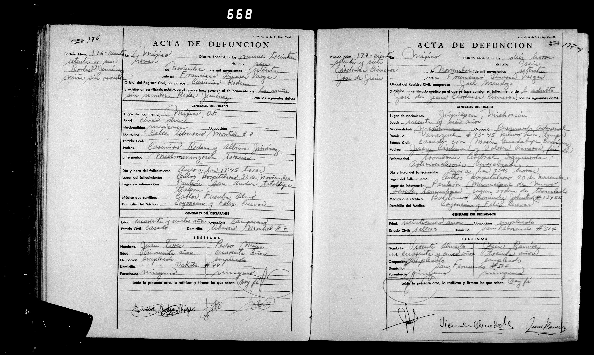

José de Jesús Cárdenas Cisneros

| Tipo | Acta de defunción |
| Fecha | 6 de noviembre de 1970 |
| Lugar | Benito Juárez, D.F. |
| Acta | Acta 177 |
| Difunto | José de Jesús Cárdenas Cisneros, 66 años |
| Padres | Juan Cárdenas / Dolores Cisneros |
| Esposa | María Guadalupe Enríquez |
Transcripción pendiente de verificación: los datos provienen del índice del registro; el manuscrito no ha sido releído línea por línea. Todo texto manuscrito no verificado se marca «ilegible/duda».